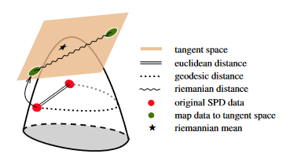

VI. Bibliographie - Covariance et Optimisation
Table of Contents
Notes de lectures de bibliographie sur les méthodes de covariance pooling et d’optimisation.
Bibliographie
( Citation: Li, Xie & al., 2017 Li, P., Xie, J., Wang, Q. & Zuo, W. (2017). Is Second-Order Information Helpful for Large-Scale Visual Recognition?. IEEE. https://doi.org/10.1109/ICCV.2017.228 Citation: Li, Xie & al., 2017 Li, P., Xie, J., Wang, Q. & Zuo, W. (2017). Is Second-Order Information Helpful for Large-Scale Visual Recognition?. IEEE. https://doi.org/10.1109/ICCV.2017.228 Citation: Li, Kadav & al., 2017 Li, H., Kadav, A., Durdanovic, I., Samet, H. & Graf, H. (2017). Pruning Filters for Efficient ConvNets. https://doi.org/10.48550/arXiv.1608.08710 ) ( Citation: Huang & Van Gool, 2016 Huang, Z. & Van Gool, L. (2016). A Riemannian Network for SPD Matrix Learning. Retrieved from http://arxiv.org/abs/1608.04233 ) ( Citation: Boumal, 2023 Boumal, N. (2023). An Introduction to Optimization on Smooth Manifolds (1). Cambridge University Press. Retrieved from https://www.cambridge.org/core/product/identifier/9781009166164/type/book )
Is Second-order Information Helpful for Large-scale Visual Recognition?
Sur l’article de ( Citation: Li, Xie & al., 2017 Li, P., Xie, J., Wang, Q. & Zuo, W. (2017). Is Second-Order Information Helpful for Large-Scale Visual Recognition?. IEEE. https://doi.org/10.1109/ICCV.2017.228 Citation: Li, Xie & al., 2017 Li, P., Xie, J., Wang, Q. & Zuo, W. (2017). Is Second-Order Information Helpful for Large-Scale Visual Recognition?. IEEE. https://doi.org/10.1109/ICCV.2017.228 Citation: Li, Kadav & al., 2017 Li, H., Kadav, A., Durdanovic, I., Samet, H. & Graf, H. (2017). Pruning Filters for Efficient ConvNets. https://doi.org/10.48550/arXiv.1608.08710 ) :
-
Quelles sont les questions scientifiques abordés par le papier et comment le papier y réponds-il ?
Objectif : augmenter la précision des modèles d’apprentissage profond, en se concentrant sur les statistiques utilisées plutôt que sur la taille des réseaux de neurones, et proposer un modèle adapté au traitement de grandes masses de données (là où les modèles basés sur des statistques d’ordres 1sont performants sur des données de taille moyenne, moins sur des grandes).
Réponse proposée : utiliser des statistiques d’ordre 2 (covariance) pour améliorer la précision des modèles d’apprentissage profond, et donc proposer une estimation robuste de la matrice de covariance normalisée pour représenter les features (en comparaison avec des méthodes existances basées sur la covariance). La méthode MPN-COV (Matrix Power Normalized Covariance) est proposée pour répondre à ces objectifs, ainsi qu’une méthode de rétropopagation du gradient associée.
Méthode :
-
Propagation du gradient :
Soit $\mathbf{X}$ la matrice de en sortie de couche de convolution (de dimension $d \times N$ avec $N le nombre de features de dimension $d$).
La matrice de covariance calculée est $\mathbf{P} = \mathbf{X}\bar{\mathbf{I}}\mathbf{X}^T$ où $\bar{\mathbf{I}} = \frac{1}{N}(\mathbf{I} - \frac{1}{N}11^T)$ et $\mathbf{I}$ la matrice identité et $\bullet^T$ l’opération transposée.
$\mathbf{P} = \mathbf{U} \mathbf{\Lambda} \mathbf{U}^T$ où $\mathbf{\Lambda} = diag(\lambda_1, \ldots , \lambda_d)$ les valeurs propres de $\mathbf{P}$ et $\mathbf{U} = [u_1, \ldots , u_d]$ la matrice orthogonale où $u_i$ est le vecteur propre associé à $\lambda_i$.
On calcule alors la matrice $\mathbf{Q} = \mathbf{P}^\alpha = \mathbf{U}\mathbf{F}(\mathbf{\Lambda})\mathbf{U}^T$ avec $\alpha in [0,1]$ et $\mathbf{F}(\mathbf{\Lambda})= diag(f(\lambda_1), \ldots ,f(\lambda_d))$ où $f(\lambda_i) = \lambda_i^\alpha$ ici.
-
Rétropropagation du gradient :
Soit $l$ la fonction de coût :
$ \frac{\partial l}{\partial \mathbf{U}} = (\frac{\partial l}{\partial \mathbf{Q}}+(\frac{\partial l}{\partial \mathbf{Q}})^T)\mathbf{U}\mathbf{F} $ où $\mathbf{F} = diag(\lambda_1^\alpha, \ldots , \lambda_d^\alpha)$
$\frac{\partial l}{\partial \mathbf{\Lambda}} = \alpha(diag(\lambda_1^{\alpha-1}, \ldots , \lambda_d^{\alpha-1})\mathbf{U}^T\frac{\partial l}{\partial \mathbf{Q}}\mathbf{U})_{diag}$
$ \frac{\partial l}{\partial \mathbf{P}} = \mathbf{U}((\mathbf{K}^T \otimes (\mathbf{U}^T\frac{\partial l}{\partial \mathbf{U}})) + (\frac{\partial l}{\partial \mathbf{\Lambda}})_{diag})\mathbf{U}^T $
où $\mathbf{K} = {K_{ij}}$ et $K_{ij} = \frac{1}{\lambda_i - \lambda_j}$ pour $i \neq j$ et $K_{ij} = 0$ pour $i = j$, et $\otimes$ le produit Kronecker matriciel,
$\frac{\partial l}{\partial \mathbf{X}} = \bar{\mathbf{I}}\mathbf{X}(\frac{\partial l}{\partial \mathbf{P}} + (\frac{\partial l}{\partial \mathbf{P}})^T)$
-
Quels sont les outils théoriques qu’ils ont besoin d’utiliser et pourquoi ils vont par là plutôt que d’utiliser d’autres méthodes ?
Méthode de rétropropagation du gradient matricielle ( Citation: Ionescu, Vantzos & al., 2015 Ionescu, C., Vantzos, O. & Sminchisescu, C. (2015). Matrix Backpropagation for Deep Networks with Structured Layers. IEEE. https://doi.org/10.1109/ICCV.2015.339 ) : elle permet de calculer les dérivées partielles de la fonction de coût avec des fonctions matricielles Méthode d’estimation de covariance basée sur la vN-MLE (von Neumann Maximum Likelihood Estimation) : permet de diminuer le biais d’estimation surestimant les grandes valeurs propres et sous-estimant les valeurs basses de manière plus performante que la “simple” MLE.
-
Quelles sont les résultats obtenus et avec quelle démarche méthodologique ?
-
Comparaison des taux d’erreur de type top-1 de la méthode suivant plusieurs valeurs du paramètre $\alpha$ (exposant de la matrice de puissance), implémenté sur AlexNet
Définition : Le taux d’erreur de type top-1 correspond à la proportion du temps où le classifieur donne la probabilité la plus élevée à la mauvaise classe. Le taux d’erreur de type top-5 correspond à la proportion du temps où la classe réelle ne fait pas partie des 5 classes prédites avec la plus grande probabilité par prédiction.
Le paramètre $\alpha$ montre une diminution du taux d’erreur top-1 lorsque le paramètre est compris entre 0 et 1. Cette diminution est plus importante autour de $\alpha = 0.5$, mais tend à être moins importante lorsque $\alpha$ diminue en dessous de $0.5$.
-
Comparaison des taux d’erreurs de type top-1 et top-5 avec d’autres méthodes de normalisation (M-Fro et M-l2) implémenté sur AlexNet,
Meilleure performance (plus faible erreur top-1) pour la méthode MPN seule. M-l2 et M-Fro ainsi que leur combianaison avec MPN présente de plus faibles performances.
-
Comparaison des taux d’erreurs de type top-1 et top-5 avec d’autres méthodes basées sur des statistiques d’ordre 2 (B-CNN et DeepO2P)
Meilleure performance (plus faible erreur top-1 et top-5) du modèle MPN-COV en comparaison avec simple covariance pooling, B-CNN et DeepO2P.
NB : un simple covariance pooling présente de meilleure performances ici que la méthode DeepO2P, ceci expliqué ici comme étant dû à l’inversion de la significativité des valeurs propres par la fonction lograrithme utilisée dans la méthode DeepO2P.
-
Aussi implémentation dans des réseaux de neurones classiques (VGG-M, VGG-16, ResNet-50) et comparaison avec des taux d’erreurs avec et sans implémentation de la méthode, et avec d’autres réseaux classiques (PreLU-net B, GoogleNet)
Augmentation des performances des réseaux VGG-M, VGG-16 et ResNet-50 selon l’erreur top-1 et top-5 avec implémentation de la méthode MPN-COV. Parmi les réseaux comparés, seul ResNet-152 dépasse les performances de ResNet-50 avec MPN-COV selon le taux d’erreur top-5 (mais reste comparable).
Cette méthode permet alors d’obtenir des résultats similaires voire dépassant les performances de réseaux très profonds.
-
-
Qu’est ce qu’on peut critiquer/améliorer sur la démarche du papier ?
- Ajout du temps de calcul, à comparer avec d’autres méthodes
- Comparaison suivant la masse de données en entrée, montrer que les performances sont élevées pour de grandes masses de données, mais donner une analyse quantitative du lien entre taille d’échantillon et performances suivant le modèle (là où le papier ne présente des rsultats que sur un seul même échantilllon pour l’ensemble des réseaux).
A Riemannian Network for SPD Matrix Learning
Sur l’article de ( Citation: Huang & Van Gool, 2016 Huang, Z. & Van Gool, L. (2016). A Riemannian Network for SPD Matrix Learning. Retrieved from http://arxiv.org/abs/1608.04233 ) :
Problème posé : traitement de matrices positives-symmétriques de plus en plus utilisé en traitement d’image, mais leur structure non euclidienne entraîne une baisse de performance lorsqu’on applique des méthodes basées sur la géométrie euclidienne
Objectif : proposer une architecture de réseau de neurones qui respecte la géométrie Riemannienne
Architecture proposée :
Classification of GPR Signals via Covariance Pooling on CNN Features within a Riemannian Framework
Sur l’article de ( Citation: Gallet, Mian & al., 2022 Gallet, M., Mian, A., Ginolhac, G. & Stelzenmuller, N. (2022). Classification of GPR Signals via Covariance Pooling on CNN Features within a Riemannian Framework. https://doi.org/10.1109/IGARSS46834.2022.9884684 ) :
 Illustration des 3 approches en traitement d’espace Riemannien